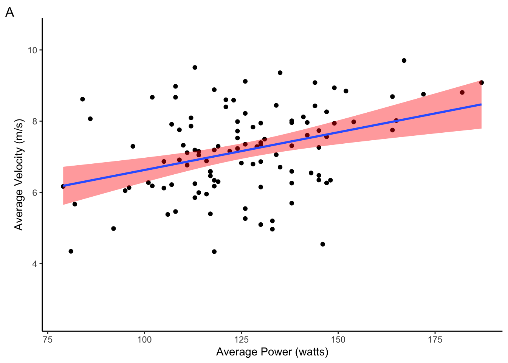
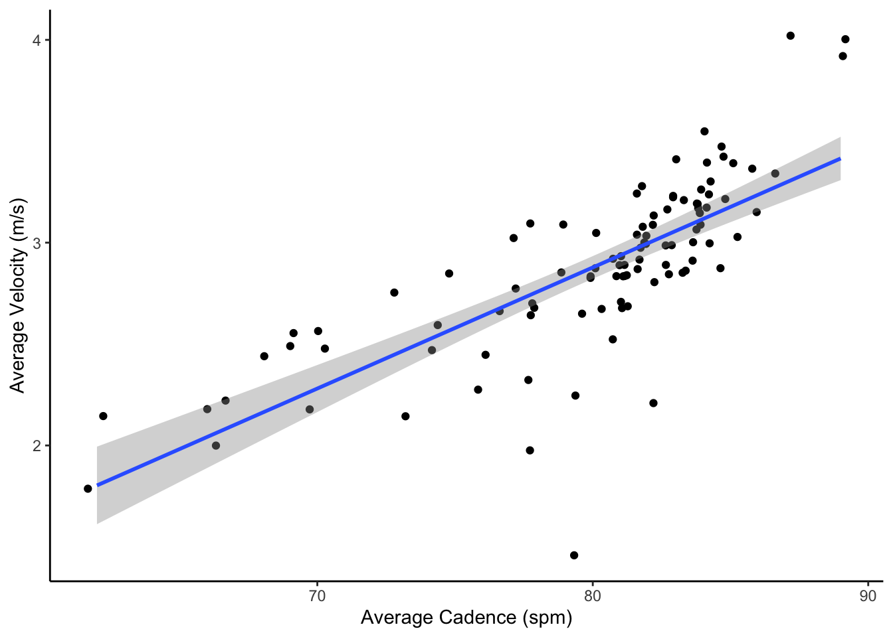

library(tidyverse)
library(lubridate)
library(viridisLite)
library(RColorBrewer)
workouts <- read_csv("./data/workouts-2019-20.csv", na = "NA")Two things I love are triathlon and data. What you will find here is combination of the two where I take my triathlon data and analyze it to get interesting insights into my training. Triathlon consists of three sports done back-to-back, where your transition between each sport counts towards your overall finish time – usually! The three sports done in order are swimming, biking, and running. Largely, triathlon is considered an endurance sport. However, the distances can vary depending on the kind of triathlon you are doing. For example, a sprint triathlon is a 700 meter swim, 20 km bike ride, and a 5 km run. This takes most people over an hour to complete. On the other side of the spectrum, you have an Ironman. This consists of a 3.8 km swim, 180 km bike ride, and a 42.2 km run (that is a full marathon!!!). A full Ironman can take up to 17 hours for people to complete. You will need some endurance athletics regardless of the distances you do.
Training for a triathlon is usually a year-long process. In some cases, it is less and in others it can be more. I typically plan out my training season one year at a time with my coach, which is why you will see my analyses are divided into years (each tab above). My typical season starts with a slow progression, which prepares my body for all the hard training ahead. Then I typically focus on building my aerobic base (you can think of this as your cardiovascular fitness) and overall strength (this helps to build a resilient body and helps to prevent injuries). I use weight training to build strength. After that, I start to transition over to a greater focus on muscular endurance (this is your muscles ability to produce propulsive power over long time periods) and more race-like training sessions. I also incorporate yoga throughout the year to improve mobility and counteract the effects of riding a bike hunched over in an aerodynamic position for up to three hours at a time.
There are two sides to triathlon success, training and recovery. Arguably, recovery should be on the heavier side of a rigged coin – recovery is when your body actually makes adaptations and improves your fitness. Those who recover well, bounce back more efficiently and properly, which gives them more time to train in return. Unfortunately, this data only shows how much and what kind of training I have done. We can get an assessment of my training volume, intensity, and frequency. This is good for making sure I am focused on the right things in training and that my training consistency is where I want it. We can also compare data between years to see how changes in training may impact race results or metrics of fitness.
Recovery! This data does not give us direct information about my recovery strategies or how well they impact my fitness. It cannot tell us whether or not I am consuming enough calories to keep up with my training or if I am getting enough of the right nutrients. It tells us nothing about how well I am hydrated, nor does it inform us about how much sleep or down time I get. It also does not tell us directly about injuries I have sustained or how things outside triathlon impact my training. For example, it cannot tell us that the combination of stress from preparing to defend my Masters thesis and an all-time high of weekly training was a likely contributor to becoming ill for two weeks after I defended in April of 2020. It is a logical explanation, but this data cannot be used to make that connection. This data is also not great at telling us what factors contribute most to my fitness improvements. This data was obtained from an uncontrolled setting where measured and unmeasured variables are constantly changing, sometimes simultaneously (i.e. this is not scientific!). For example, it is very challenging to decipher if interval training or less time playing video games was a better contributor my race results. It is also important to note that this data is based on a subject of n=1 (me!). That means this data will show you what might and might not work for my body, but it might not say anything about what will and will not work for you. However, that is part of why I enjoy triathlon so much. I get to constantly tweak my training, push my body to its limits, and learn new things about myself. Over time, it becomes obvious how I can take advantage of my unique attributes and find success.
There are all sorts of data that one can record in triathlon training. I obtain heart rate, power, distance, time, velocity, and cadence data. This data can also be obtained in a number of different ways. For example, you could use a fancy monitor to record heart rate, or you could calculate your heart rate by manually measuring your pulse. All of my data is obtained through various sensors and electronic devices. This removes human error and automatically records the data. I’ve outlined some of the metrics below – I know, what a bore!
Heart rate is perhaps the most cited metric among triathletes, and for good reason. Heart rate is measured in beats per minute (bpm), and it tells us about how hard our bodies are working (roughly speaking). The idea is that as our muscles work harder, they require more oxygen and nutrient, so our heart rate increases to push more oxygen and nutrients to keep up with the demand from our muscles. Through countless studies in sports science, scientists have figured out that our heart rate can be broken down into different zones, which can be used by athletes to figure out how hard their bodies are working. These zones are calculated in different ways depending on your goal, but they generally fall into aerobic and anerobic zones. For me, zone 2 is generally aerobic (long and steady efforts). Most of my training should fall into this category. Remember at the beginning when I said triathlon is an endurance sport? Well, targeting aerobic fitness is essential to these kinds of sports. It also lets you train more. You cannot possible train all out all the time without burning out or injuring yourself. Zones 3 is still aerobic, but it is at the upper end. This is where your race day efforts are usually done (unless it is an ironman, which is zone 2). Anything above zone 3 is generally anerobic. This is sprinting for shorter periods of time. Zones are determined based on your functional threshold heart rate, which is 95% of your average heart rate over a 20 minute all out test. The beauty of heart rate is that your zones rarely change, you just get faster in a given zone.
For me, power is restricted to bike workouts. It is measure in watts, and it represents the actual work your body is putting out (not just an indicator of how much work you are doing). Unlike heart rate, power cannot be “artificially” altered by things like outside temperature or hydration. Your power output is a direct measure of your body’s work for a given workout. However, power is unique to your body composition. A lighter person does not need the same amount of power as a heavier person to go the same speed on the same course under the same conditions. Therefore, you must use watts per unit of weight (watts/kg usually) if you are going to compare someone’s power data to reference data (whether it’s a table or other people’s power data). Similar to heart rate, power can be divided into zones based on your functional threshold power (FTP). You can obtain FTP by taking 95% of your average power of a 20 minute all out test on the bike. The zones fall into similar categories as the heart rate zones. Zone 2 is considered aerobic (or often called base). Zone 3 is usually race effort. Anything above that will help improve your muscle strength and anaerobic fitness. The downside to power is that your zones are not fixed. They are not fixed because your FTP can fluctuate based on your fitness. Higher FTPs are a sign of greater fitness, as is being able to hold a certain power output for longer.
workouts %>%
filter(WorkoutType == "Bike") %>%
ggplot(aes(PowerAverage, HeartRateAverage)) +
geom_point() +
stat_smooth(method = "lm", fill = "green") +
theme_classic() +
labs(x = "Average Power (watts)", y = "Average Heart Rate (bpm)") +
scale_y_continuous(breaks = seq(75, 180, 25), limits = c(75, 180))Velocity is measured in meters/second. I convert velocity into speed or pace based on the commonly used metric in a given sport. I use seconds per 100 meters for swimming (sec/100m), kilometers per hour (km/h) for biking, and minutes per kilometer (min/km) for running. These are great for testing how well you are progressing towards your target paces or finish time. However, they have very limited uses outside of that. That is because velocity can be greatly impacted by factors outside your fitness. The number and steepness of hills on your course, the wind conditions, the number of traffic lights, and the terrain are all things outside your fitness that can impact your velocity. Therefore, velocity has very little association to your actual fitness. That is why I only use it for exploratory analyses and to report race results.
workouts %>%
filter(WorkoutType == "Bike") %>%
ggplot(aes(PowerAverage, VelocityAverage)) +
geom_point() +
stat_smooth(method = "lm", fill = "red") +
theme_classic() +
labs(x = "Average Power (watts)", y = "Average Velocity (m/s)", tag = "A") +
ylim(2.5, 10.5)
workouts %>%
filter(WorkoutType == "Bike") %>%
ggplot(aes(HeartRateAverage, VelocityAverage)) +
geom_point() +
stat_smooth(method = "lm", fill = "red") +
theme_classic() +
labs(x = "Average Heart Rate (bpm)", y = "Average Velocity (m/s)", tag = "B") +
scale_y_continuous(breaks = seq(2.5, 10.5, 2.5), limits = c(2.5, 10.5)) +
scale_x_continuous(breaks = seq(75, 180, 25), limits = c(75, 180))
Cadence applies to both biking and running. For biking, it is the number of pedal revolutions per minute (rpm). Higher cadence on the bike is associated with greater rotational force, which can increase your power. However, there is a tipping point where too high a cadence leads to diminishing gains in power and a less efficient pedal stroke (it would make more sense to change into a higher gear at this point). Experts have recommended a cadence between 85-100 rpm to maximize the benefits of cadence. For running, cadence is the number of steps per minute (spm). Experts say increasing your cadence can pay dividends to your running efficiency. However, spm is highly correlated to your pace – faster paces are associated with higher cadences (figure below). That is why you will see more experienced runners turning their feet over like Bugs Bunny. Therefore, changes in cadence could mean you are becoming more efficient, you are getting faster, or both (this is the most likely explanation)!
workouts %>%
filter(WorkoutType == "Run") %>%
ggplot(aes(CadenceAverage, VelocityAverage)) +
geom_point(position = "jitter") +
geom_smooth(method = "lm") +
theme_classic() +
labs(x = "Average Cadence (spm)", y = "Average Velocity (m/s)")
This is not scientific as I mentioned earlier. This is a fun activity where I get to explore my hard work in training and play with datasets, which I find joy in doing. I get to try and answer some questions about myself, and I get to look at data in different ways. The graphs I choose to show might not be the most appropriate way to represent the data I show – I am very conscious of this. My insights might not be 100% accurate, either. Regardless, it is a vignette into how I train and progress as an athlete. I am happy if it gives you ideas or helps you learn about triathlon. If it inspires you to do a similar project, and you want to collaborate, please contact me on LinkedIn (). I would love to work with you! Otherwise, enjoy learning about my journey.